Аркан
Таро Уэйта:
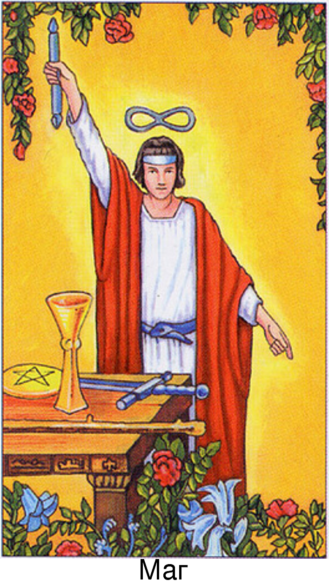
Марсельское Таро:
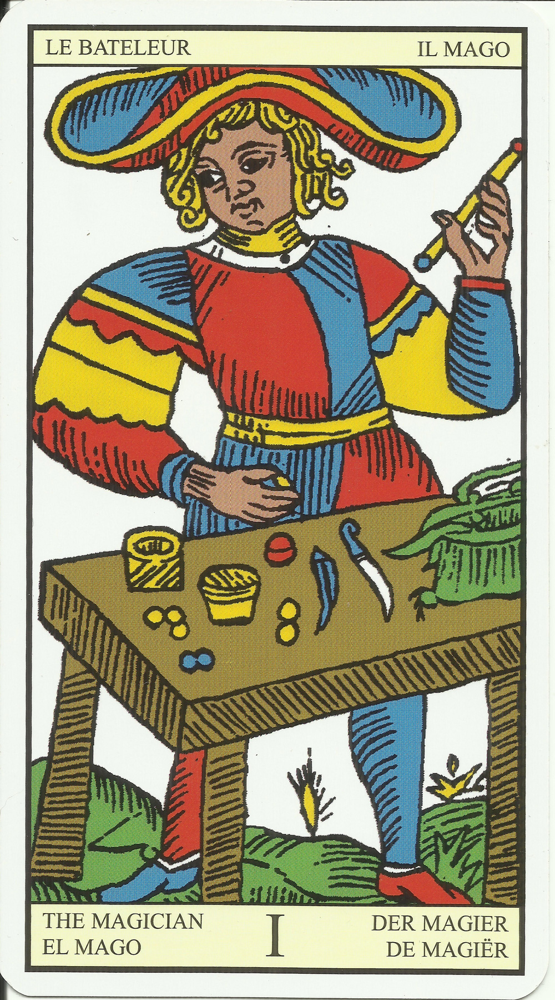
Таро Тота (Алистера Кроули):
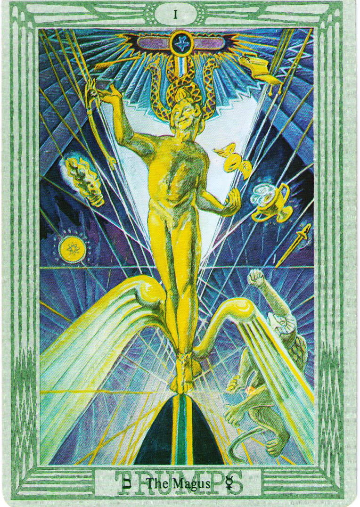
Мифическое Таро:
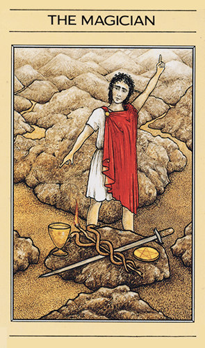
Ленорман
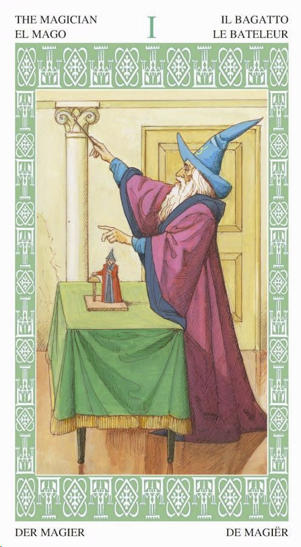
Симболон:
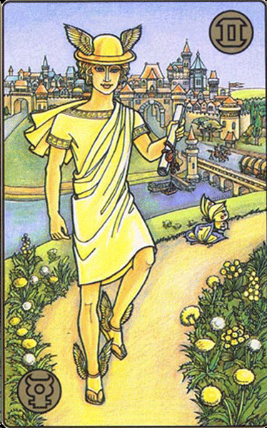
Космическое таро:
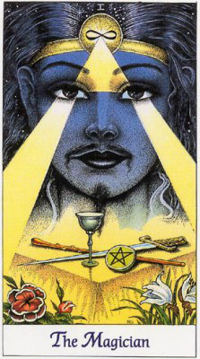
Египетское таро
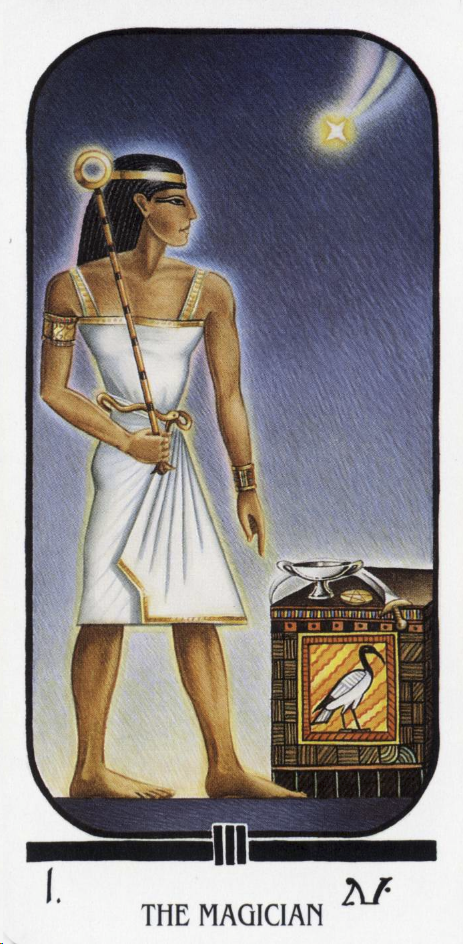
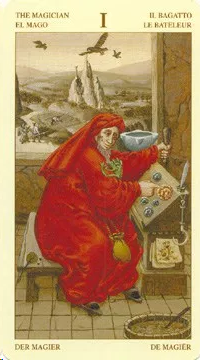
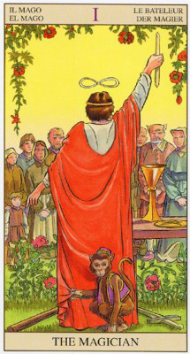
Разное:
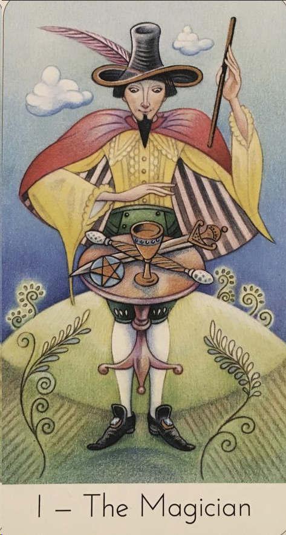
цвет:
желтый фон (принцип Солнца), красный плащ (принцип Воли), белый (белая рубашка - чистота, искренность), зеленый (росток, жизнь, растения, начало жизни)
наличие в карте 4-х стихий несет желание озвучить цвета этих стихий:
голубой - воздух
красный - огонь
коричневый - земля
зелено-голубой - вода
фигура:
X - указывающее путь и уравновешивает
символ:
змея пожирающая свй хвост (на таро уайта и на египетском таро у мага такой пояс, на сколько я помню, это может быть символом цикличности и бесконечности, кстати еще один после математического символа )
Нашла название в ВИКИ - Уроборос!
буква:
А - первая буква алфавита, начало, главный, первый. может даже циферка 1 ))
ощущения -
Мужскго начала, солнечного принципа (сила и теплота). Энергетически-насыщенная карта. Желание действовать, ощущение власти и контроля над собятиями "все в моих руках". Возможно даже преображение - переход на новый виток развития.
Целеустремленность.
запах: вот тут наверное смесь запахов. Есть ноты гвоздики, цинтрусовых + почему-то захотелось почувствовать хвойные, смолистые запахи
звук: но вот со звуком сложно, захотелось оркестр. Вспомнилась "праздничная увертюра Шостаковича (вступление)" https://www.youtube.com/watch?v=a_xTEGqWFJo (до 0:48, потом не то.. )
вкус: пряный, острый
астрология:
Солнце, Меркурий
Ключевые слова: "Желай и добивайся!"
мифология: Гермес Трисмегист, Тот, Бог-Творец, Ра
окружение: фалический символ, жезл, свеча, ключ
ритуал: зажигание свечи во тьме
способности: материлизация воли
Мастер
Большой взрыв